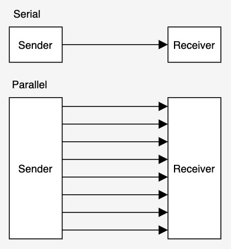
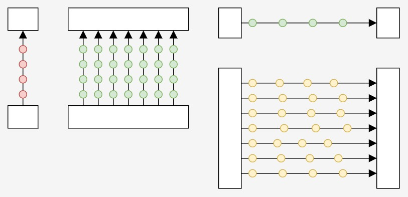
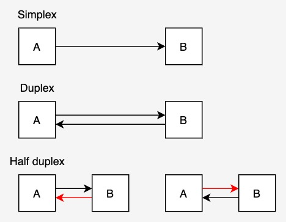

Introduction
Data transmission is a key part of basically everything to do with computers. Without it, You wouldn't be able to connect your 3090 Ti to your computer computers wouldn't even exist at all. This article will explain all you need to know about data transmission (at least in the IGCSE course)
Serial vs Parallel
Serial and parallel is one of the core aspects of data transmission. They are often grouped together because all forms of data transmission fall into one of these categories. In serial transmission, data is sent through one path, while in parallel transmission, data is sent through multiple paths:
While serial transmission is significantly slower as it only has a fraction of the bandwidth, parallel transmission is more complex and can get more pricey. In addition, parallel transmission can lead to different arrival times for data (as one path may be slightly slower than others) which can create a significant disrepancy over long distances. This is why parallel transmission is mainly preferred for short distances, while serial is preferred for longer distances.
| Serial | Parallel |
|---|---|
| Very slow | Fast (more bandwidth) |
| Simple | More complexity |
| Cost-efficient | More expensive |
| Consistent | Arrival times may fluctuate |
Simplex and duplex
The next categories of data transmission represents in what directions data can be sent. Simply put, simplex means data can only be transmitted in one direction only, duplex means it can be sent in both directions, and half duplex supports going in both directions but not simultaneously.
| Simplex | Duplex | Half duplex |
|---|---|---|
| One direction only | Both directions | Only 1 direciton at a time |
| Keyboard input (data only goes from keyboard => computer) | Telephone (you can both talk and listen at the same time) | Walkie talkie (only 1 person can talk at any time) |
Transmission over the internet
On the internet, data is transmitted through packets. While packets can get quite complicated with specifics, the core principle is simple: a packet is the smallest ‘unit’ of data sent across the web. However, a limited packet size means larger resources wouldn't fit in a single packet. If the file requested is too large to be sent in one packet, the data is split into multiple different packets that are sent individually to reach their destination. These packets each take a different route to arrive. Each packet is like a letter, containing the following information:
- Sender IP address
- Receiver IP address
- Payload (actual data)
- Checksum (to verify data)
- Packet ID (to tell what order the packets go in)
- Etc.
The internet consists of parallel duplex lines (mostly) underground. While the information is sent across long distances, each packet is quite small (most are smaller than 2KiB in size) and so the whole packet is sent through one path to prevent desynchronization issues. It is also a duplex system because it can transfer data (packets) in both directions at the same time.